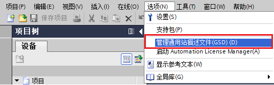
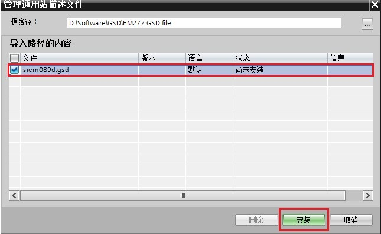
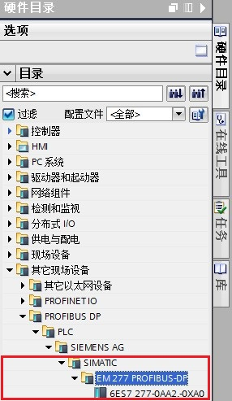
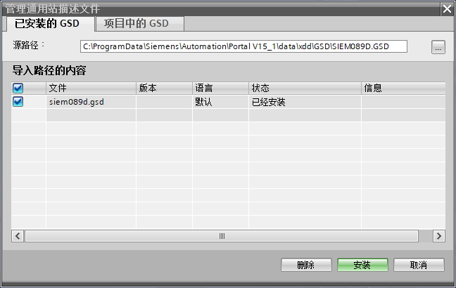

当 DP 从站为第三方设备，或在硬件列表中找不到西门子设备，可通过安装 GSD 文件将该设备添加到硬件目录。
S7-1200 DP从站模块 CM1242-5 GSD 文件下载如下：
在 TIA PORTAL 软件中菜单栏选择“选项”>“管理通用站描述文件(GSD)”可安装或删除已经安装完成的 GSD 文件。如图 1 所示：

图 1.管理通用站描述文件(GSD)
以安装西门子设备 EM277 的 GSD 文件为例，如上选择“管理通用站描述文件(GSD)”，出现“管理通用站描述文件”窗口。
从“源路径”选择要安装 GSD 文件的文件夹，从所显示 GSD 文件的列表中选择要安装的一个或者多个文件如“siem089d.gsd”，单击“安装”按钮。如图 2 所示：

图 2.选择并安装 GSD 文件
安装成功后，可在硬件目录下，其它现场设备找到安装的 GSD 文件的设备，如图 3 所示：

图 3.硬件目录
使用STEP 7 V13 SP1 以上的软件，也可将已经安装的 GSD 文件删除。
要删除已经安装完成的 GSD 文件，按如图 1 所示，选择菜单栏“选项”>“安装通用站描述文件 (GSD)”，进入“管理通用站描述文件”窗口。
在源路径中浏览到例如“C:\ProgramData\Siemens\Automation\Portal V15_1（取决于TIA PORTAL 版本）\data\xdd\GSD\”，选择一个 GSD 的文件夹，例如"SIEM089D.GSD"，在下方的导入路径的内容中选择文件，例如“siem089d.gsd”，单击“删除” 按钮。如图 4 所示：

图 4.选择并删除 GSD 文件
此后，所选的 GSD 文件将被删除，DP 从站不再出现在硬件目录中。